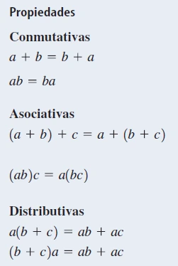
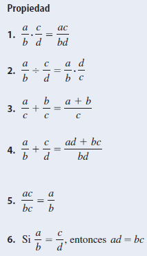
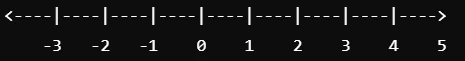
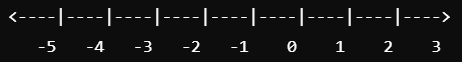
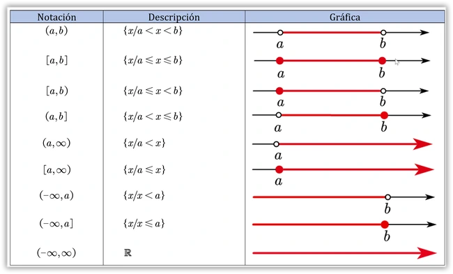
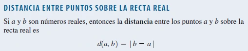

Los números reales son aquellos que incluyen tanto los números racionales (fracciones y números enteros) como los irracionales (números con decimales infinitos no periódicos, como √2 o π). Representan cualquier número en la recta numérica y se denotan con el símbolo ℝ.
Números naturales
Los números naturales son los que usamos para contar y ordenar, como 1, 2, 3, 4, etc. Se denotan por ℕ, e incluyen el 0 según la convención. Tienen propiedades como cerradura (suma y multiplicación de dos números naturales dan un natural), conmutatividad, asociatividad y el uso de elementos neutros (0 en la suma y 1 en la multiplicación). Los números naturales también incluyen primos (solo divisibles por 1 y ellos mismos) y compuestos (con más divisores).
Ejemplos
Ejemplo 1: Propiedad de Cerradura
5 + 3 = 8
Al sumar dos números naturales, el resultado es otro número natural, lo que demuestra la propiedad de cerradura.
Ejemplo 2: Sucesor
Sucesor de 7
8
El número que sigue a 7 en la secuencia de números naturales es 8, lo que sigue la regla del sucesor en los axiomas de Peano.
Video de ayuda
Páginas de ayuda
Números enteros
Los números enteros incluyen tanto los números positivos como los negativos, además del cero, y se representan como ℤ. El conjunto de números enteros es {..., -3, -2, -1, 0, 1, 2, 3, ...}.
Ejemplos
Ejemplo 1: Operación con Enteros
7 + (-4) = 3
Al sumar un número positivo con uno negativo, el resultado es otro número entero, en este caso 3.
Ejemplo 2: Valor Absoluto
|−6| = 6
El valor absoluto es la distancia de un número al 0 en la recta numérica, sin importar el signo del número.
Video de ayuda
Páginas de ayuda
Números Racionales
Los números racionales son aquellos que se pueden expresar como fracciones de dos enteros, donde el denominador no es cero. Se denotan por ℚ e incluyen fracciones, enteros, y decimales finitos o periódicos. Ejemplos son 1/2, -3/4, y 7 (que puede escribirse como 7/1).
Ejemplos
Ejemplo 1: Suma de dos números racionales
Resolver (3/4) + (2/3).
(3/4) = (3 × 3) / (4 × 3) = 9/12
(2/3) = (2 × 4) / (3 × 4) = 8/12
9/12 + 8/12 = (9 + 8) / 12 = 17/12
Se encuentra el denominador común (12), se ajustan las fracciones, se suman los numeradores (9/12 + 8/12), y se simplifica si es necesario.
Ejemplo 2: Multiplicación de dos números racionales
Resolver (-2/5) × (3/7).
(-2) × 3 = -6
5 × 7 = 35
(-2/5) × (3/7) = -6/35
Se multiplican los numeradores (-2 × 3 = -6) y los denominadores (5 × 7 = 35), resultando en -6/35, que es irreducible.
Video de ayuda
Páginas de ayuda
Números Irracionales
Los números irracionales son aquellos que no pueden expresarse como una fracción de dos enteros, y su representación decimal es infinita y no periódica. Ejemplos comunes incluyen √2, π y e.
Ejemplos
Ejemplo 1: Raíz Cuadrada Irracional
Resolver √2.
√2
Aproximación: 1.414
1.414 + 3 = 4.414
Ejemplo 2: Suma de un número racional e irracional
Resolver 3 + √3.
√3
Aproximación: 1.732
3 + 1.732 = 4.732
En estos ejemplos, se trabajó con números irracionales utilizando aproximaciones decimales para realizar las operaciones. Se sumaron los valores aproximados para obtener resultados que ilustran cómo se puede manejar la suma de números racionales e irracionales.
Video de ayuda
Páginas de ayuda
Propiedades de los Números Reales
Los números reales incluyen tanto números racionales como irracionales y se representan como ℝ. Las propiedades de los números reales son fundamentales para las operaciones aritméticas. Estas son:

Ejemplos
Ejemplo 1: Aplicación de la propiedad distributiva
Resolver: 3 × (4 + 5)
3 × (4 + 5) = (3 × 4) + (3 × 5)
3 × 4 = 12
3 × 5 = 15
12 + 15 = 27
Ejemplo 2: Aplicación de la propiedad asociativa en la suma
Resolver: (7 + 2) + 5
(7 + 2) + 5 = 7 + (2 + 5)
2 + 5 = 7
7 + 7 = 14
Se aplicaron las propiedades de los números reales para realizar las operaciones. En el primer ejemplo se usó la propiedad distributiva y en el segundo la propiedad asociativa, mostrando que el orden y agrupación de los números no alteran el resultado.
Video de ayuda
Páginas de ayuda
Adición y sustracción
El número 0 es conocido como identidad aditiva, ya que para cualquier número real a, se cumple que a + 0 = a. Además, cada número real a tiene un negativo, -a, que satisface a + (-a) = 0. La sustracción se puede ver como una adición de un número negativo, dado que:
a - b = a + (-b)

Ejemplos
Ejemplo 1: Adición con números negativos
Resolver: 7 + (-5)
7 + (-5) = 7 - 5
7 - 5 = 2
Al sumar un número positivo (7) y un número negativo (-5), se puede considerar como restar el valor absoluto de -5. Por lo tanto, 7 + (-5) es igual a 7 - 5, que da como resultado 2.
Ejemplo 2: Sustracción de un número negativo
Resolver: 10 - (-4)
10 - (-4) = 10 + 4
10 + 4 = 14
Al restar un número negativo (-4), esto es equivalente a sumar su valor positivo (4). Así, 10 - (-4) se transforma en 10 + 4, resultando en 14.
Video de ayuda
Páginas de ayuda
Multiplicación y división
El número 1 es conocido como la identidad multiplicativa, ya que para cualquier número real a, se cumple que a * 1 = a. Además, todo número real a diferente de cero tiene un recíproco, 1/a, que satisface a * (1/a) = 1. La división es la operación que deshace la multiplicación y se define como:
a ÷ b = a ⋅ (1/b)
Donde escribimos a/b como el cociente entre a y b, donde a es el numerador y b es el denominador (o divisor).
PROPIEDADES DE LAS FRACCIONES

Video de ayuda
Recta Real
La recta real es un modelo matemático que representa todos los números reales en una línea continua y unidimensional. Cada punto en esta línea corresponde a un número real único y viceversa.
Ejemplos
Ejemplo 1: Ubicación de números en la recta real
Problema: Coloca los números -3, 0, 2, y 5 en la recta real.
Dibuja una línea horizontal y marca un punto en el centro para representar el número 0.
Marca los números en la recta:
El número -3 se coloca a la izquierda de 0.
El número 0 se coloca en el centro.
El número 2 se coloca a la derecha de 0.
El número 5 se coloca más a la derecha que 2.
Resultado: La recta real ahora tiene los números ubicados correctamente:

Ejemplo 2: Identificar la distancia entre dos números en la recta real
Problema: Encuentra la distancia entre los números -4 y 3 en la recta real.
Coloca los números en la recta real:

Usa la fórmula de la distancia entre dos números reales:
Distancia = |a - b|, donde a y b son los números.
Sustituye los valores:
a = 3
b = -4
Distancia = |3 - (-4)| = |3 + 4| = |7| = 7
Resultado: La distancia entre -4 y 3 en la recta real es 7.
Video de ayuda
Conjuntos e Intervalos
Conjunto
Un conjunto es una colección de elementos distintos, denotados con letras mayúsculas y entre llaves. Ejemplo: A = {1, 2, 3}.
Elementos únicos: no se repiten.
Pertenencia: a ∈ A significa que a pertenece a A.
Conjunto vacío: denotado como ∅.
Intervalos
Un intervalo es un subconjunto de números reales entre dos extremos.
Abierto: (a, b) no incluye extremos.
Cerrado: [a, b] incluye extremos.
Semiabierto: [a, b) incluye a, pero no b.

Ejemplos
Ejemplo 1
Formar un conjunto B de números pares a partir de A = {1, 2, 3, 4, 5, 6}: B = {2, 4, 6}.
Ejemplo 2
Determinar si 3 está en el intervalo [2, 5): 3 está en el intervalo.
Video de ayuda
Páginas de ayuda
Valor Absoluto y Distancia
Valor Absoluto
El valor absoluto de un número real es su distancia a cero en la recta real, denotado como |x|:
Si x ≥ 0, entonces |x| = x.
Si x < 0, entonces |x| = -x.
Propiedades
|x| ≥ 0 para cualquier x
|a · b| = |a| · |b|
|a + b| ≤ |a| + |b| (desigualdad triangular).


Distancia
La distancia entre dos puntos a y b en la recta real se calcula como:
Distancia = |a - b|

Ejemplos
Ejemplo 1
|-7| = 7 y |4| = 4
Ejemplo 2
Distancia entre 3 y -2: Distancia = |3 - (-2)| = |5| = 5.